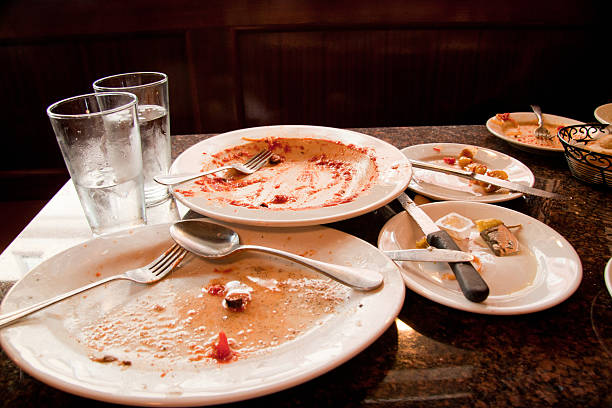

lasagna

This is a picture of a finished dish underneath the lasagna heading
and as part of the project requirement i gotta do that in order to
to develop the needed skills as far as web dev is concerned.
Ingridients
- tomatoes
- green pepper
- seasonings
- carrots
Steps
- You have to make sure all the ingridients are well washed and clean
- Pour some amount of oil in a pan and allowed to heat for some minutes
- put all the ingridients mentioned and allowed to heat.
- for some reasons ill end the process here and you can go search it and do it yourself